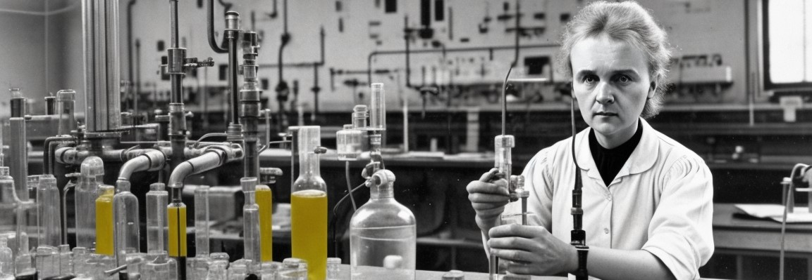

Marie Curie
 Marie Curie è stata una famosa scienziata polacca naturalizzata francese, nata il 7 novembre 1867 a Varsavia e morta il 4 luglio 1934 a Passy, Francia.
È stata la prima donna a vincere un Premio Nobel e la prima persona ad aver vinto due Nobel in due diverse discipline scientifiche.
Marie Curie, nata Maria Skłodowska, proveniva da una famiglia di insegnanti e scienziati.
Fin da giovane, mostrò un grande interesse per la scienza e la matematica.
Dopo aver completato gli studi superiori a Varsavia, si trasferì a Parigi per continuare la sua formazione scientifica.
A Parigi, Marie studiò alla Sorbona, dove incontrò il suo futuro marito, Pierre Curie.
Insieme, condussero importanti ricerche sulle proprietà dei materiali radioattivi, scoprendo due nuovi elementi chimici: il polonio e il radio.
Per queste scoperte, Marie Curie ricevette il Premio Nobel per la Fisica nel 1903, diventando la prima donna a vincere tale premio.
Dopo la morte di Pierre Curie nel 1906, Marie Curie continuò a lavorare nel campo della radioattività.
Nel 1911, ricevette un secondo Premio Nobel, questa volta per la chimica, divenne la prima persona a vincere due Nobel in due diverse discipline scientifiche.
Marie Curie fu anche la prima donna a diventare professoressa alla Sorbona e fondò il Radium Institute a Parigi.
Durante la prima guerra mondiale, si dedicò alla ricerca medica e sviluppò unità mobili di radiografia per aiutare i soldati feriti.
Tuttavia, la sua ricerca sulla radioattività ebbe un costo per la sua salute.
Marie Curie morì nel 1934 a causa di una malattia causata dall'esposizione prolungata alle radiazioni.
Marie Curie è considerata una delle più grandi scienziate di tutti i tempi e un'icona per le donne nella scienza.
Il suo lavoro ha aperto la strada a importanti scoperte nel campo della fisica e della chimica,
oltre ad aver contribuito allo sviluppo della radioterapia per il trattamento del cancro.
La sua vita e il suo lavoro sono stati celebrati in tutto il mondo e il suo nome è diventato sinonimo di eccellenza scientifica.